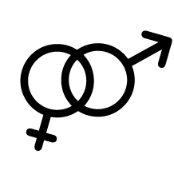

Americans will casually greet you and ask, “How are you doing?” A good way to respond would be with “fine”, “great”, “I’m good, how are you?” or “Very well, thank you!”
Sometimes you shake hands with someone you meet for the first time.
x
Don’t be offended when people say, “See you later,” even though you may end up never seeing them again - take it as an expression. Usually, people won't hug eachother when meeting for the first time. Maybe after spending a few hours together, you can give a casual hug. In class, teachers will encourage you to speak up in critique or volunteer for demonstrations. Class participation is usually stressed upon in class.
 This may be difficult at first, but practice makes perfect, and it will get easier as you become more familiar with your peers.
This may be difficult at first, but practice makes perfect, and it will get easier as you become more familiar with your peers.
Ingrid and Tasnima
Greta and Kirthank
Joseph and Kendra
Greta and Kirthank
Since the US is so diverse, people from different regions have distinct accents and customs
Students are driven by their own goals and enjoy a wide range of activities.
You will see several cultural festivals celebrated on campus.
Also, most students here hold liberal views
and you may encounter unfamiliar identities and perspectives.
Julie and Pablo
Tasnima and Ingrid
Tasnima and Ingrid
Joseph and Kendra

Approach these with an open mind and understand that everyone has their own reasons for their beliefs, but they are open to hear what others around the world think of them.
Don’t hesitate to engage in conversation! You have more in common than you think.
Tasnima and Ingrid